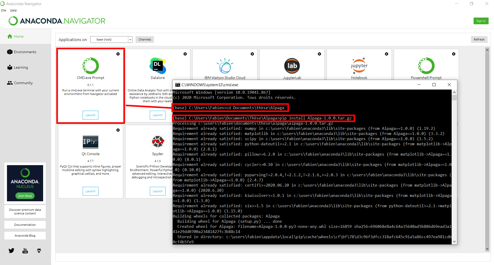

1. Installation¶

The GitHub page provides the latest version. You can download the repository by clicking on the green [<> Code] button and then choosing either the Git method (clone) or downloading an archive (.zip).
1.1. Installation using pip¶
Alpaga is a Python module that can be installed using pip. The package is distributed as alpaga.tar.gz. Use:
pip install alpaga.tar.gz
to install the package with your default Python version, or:
mypython3.X -m pip install alpaga.tar.gz
to specify a particular Python version (mypython3.X).
1.2. Installation using conda¶
To install with Anaconda, open the Anaconda Prompt (or terminal if Anaconda is in your PATH) and run the same pip command. Make sure to use the correct alpaga.tar.gz file — i.e. check that the path corresponds to its actual location on your computer.
{kind=link}
1.3. Testing your installation¶
To use Alpaga, import it in a Python environment with:
import Alpaga
Make sure you are not in the source code directory when importing, to ensure the installed package is used.
Note
You can run print(Alpaga) to check from where Python is importing the package.
If you want to perform tests, you can use the test_your_installation.ipynb Jupyter notebook located in the Tutorials directory. Just run the notebook; it should complete within a few minutes without printing any errors.
If you have issues, make sure that Alpaga is correctly installed (import Alpaga works) in your Python environment. If you are stuck, please contact us using the GitHub page by raising an issue.
1.4. Tutorials¶
Tutorials are available in the Tutorials directory. Some pages of this wiki point to tutorials that help you understand how Alpaga works. Note that data is required to run these tutorials. They are stored within the Python module (in the Data_tutorial directory) and can be accessed through a helper function:
from Alpaga.Data_tutorial import get_tutorial_path
directory = get_tutorial_path("SHS/Eau_polar_V")
You should not need to change any lines in the tutorials that point to the tutorial data.
- Release
1.2
- Date
Aug 22, 2025